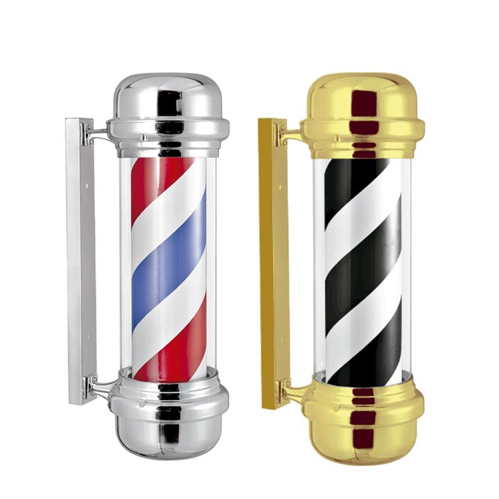

Produto recomendadoVisual classico
WDZD Poste de Barbeiro Prateado
Versão prateada e rotativa para sinalética exterior com look mais clássico e neutro. Boa opção para quem quer um poste visível sem puxar demasiado para o dourado ou para um visual mais ornamentado.
Antes de comprar
- Melhor para: Visual classico
- Ponto forte: acabamento prateado fácil de integrar
- Vantagem adicional: efeito rotativo chama o olhar

Porque este produto vale o clique
Destacamos este produto pelo equilíbrio entre uso real, procura e feedback de compradores para te ajudar a decidir mais depressa.
Para quem é
Versão prateada e rotativa para sinalética exterior com look mais clássico e neutro.
Onde faz sentido
Boa opção para quem quer um poste visível sem puxar demasiado para o dourado ou para um visual mais ornamentado.
Pontos fortes
- acabamento prateado fácil de integrar
- efeito rotativo chama o olhar
- boa ponte entre presença e sobriedade
Limitações
- continua a depender da montra e da localização
- não substitui nome, horario ou contactos bem visíveis
Loja afiliada
Comprar agora na Amazon.es
Confirma disponibilidade e avança para a compra com entrega rápida e pagamento seguro na plataforma.
Transparência: Alguns links nesta página são links de afiliado. O OndeCortar pode receber comissão por compras elegíveis.
Relacionados
Produtos relacionados

Fagaci Professional Hair Clippers
Boa leitura de maquina de corte profissional

Revista OndeCortar
Artigos ligados a esta recomendação
Mais artigos sobre o mesmo tema para continuares da dúvida para a compra.

A história do poste de barbeiro: porque usamos este símbolo sem saber o que significa
O poste de barbeiro está em quase todas as barbearias, mas pouca gente sabe de onde vem ou o que significam realmente as suas cores.